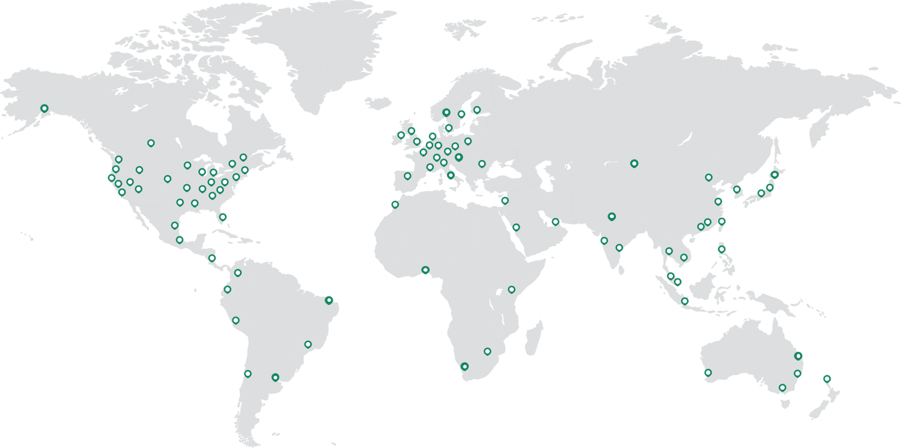
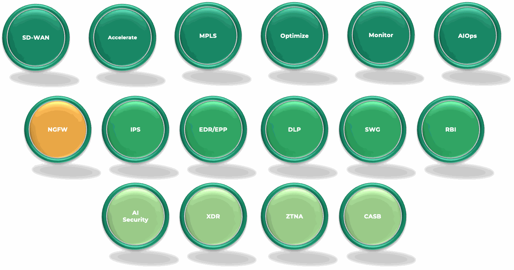
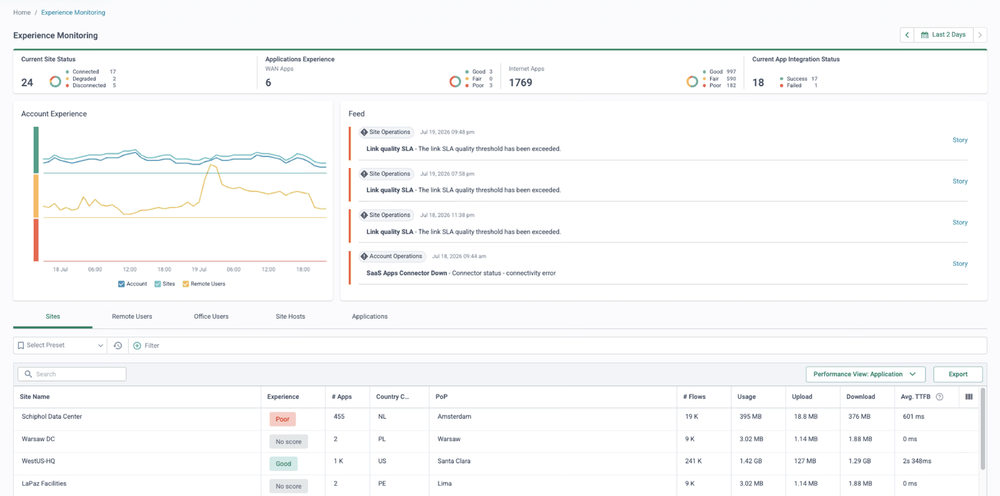
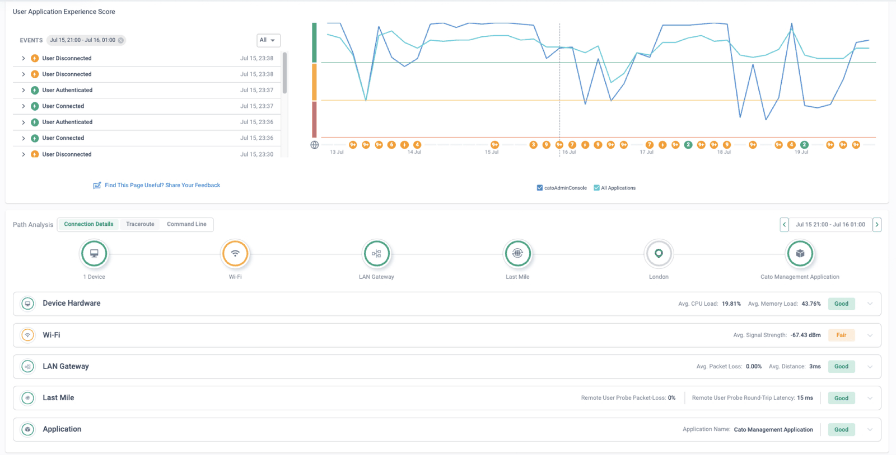
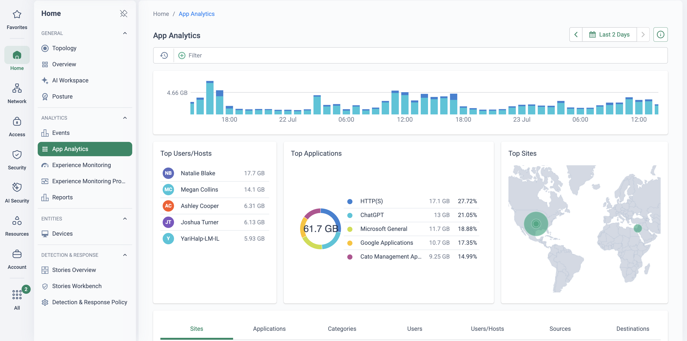
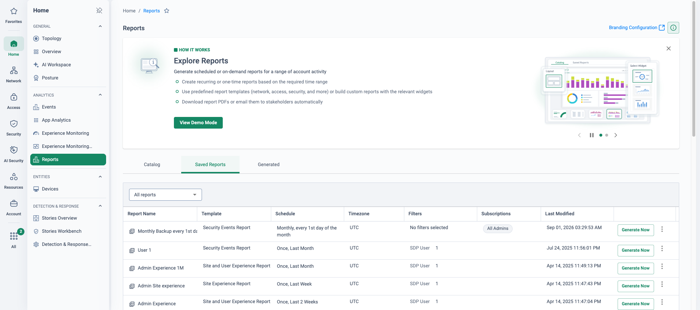
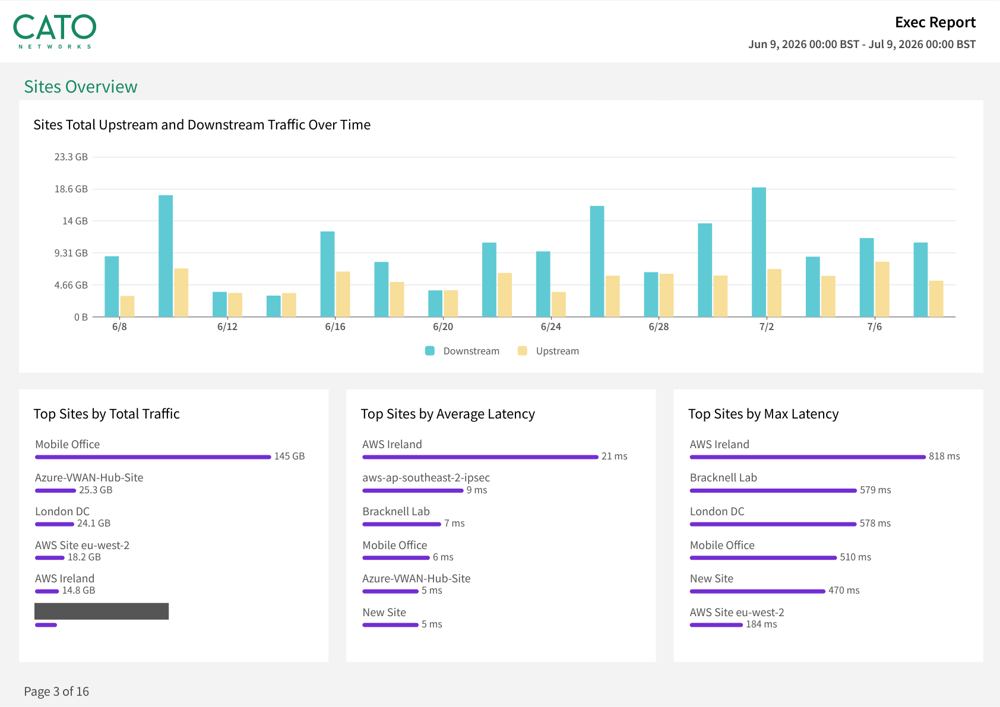
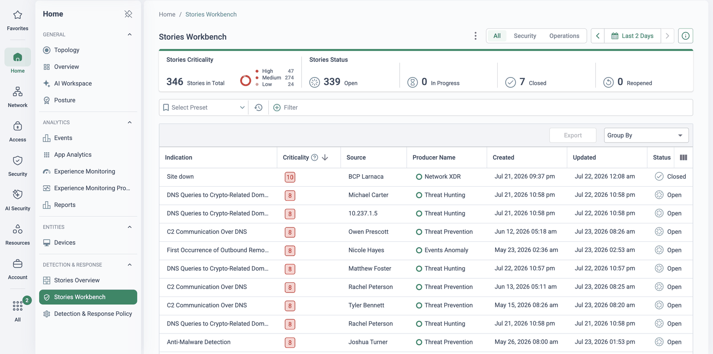

Why this matters
The objective is a single-pane-of-glass view of networking, security, users, sites, devices, applications and traffic flows — eliminating the blind spots created by disparate point solutions, regional firewalls, VPN concentrators and carrier-managed links. Not just operational visibility for the engineer at 2am, but executive visibility with full context: usage trends, risk posture, SLA compliance and cost impact, on the same data.
“After decades of focusing on network performance and features, future network innovation will target operational simplicity, automation, reliability and flexible business models.” — Gartner, Strategic Roadmap for Networking, 2019. Visibility is where that simplicity is felt first: innovation is less about what the network does, and more about how it is operated.
The current marker: Cato is a Leader — 2026 Gartner Magic Quadrant for SASE Platforms (third consecutive year) (Gartner, Magic Quadrant for SASE Platforms, Jonathan Forest, Andrew Lerner, John Watts, 28 July 2026). Gartner does not endorse any company, vendor, product or service depicted in its publications.
Stitched-together visibility fails everyone
Four complaints we hear from IT leaders in almost every meeting — all symptoms of the same fragmentation:
Poor visibility
“I have no idea what's going on in my network — so much in the shadow.” Answers require piecing together data from different technologies and service providers, and by the time the picture is assembled, it is out of date.
High complexity
Many point solutions address many, often overlapping use cases — and multiple MSPs each manage their own slice without a full picture. Nobody owns the end-to-end view.
Performance finger-pointing
Users complain about VoIP quality and laggy applications. Where do you begin? EUC, infrastructure, security, network and ops teams each check their own tool — and point at each other.
Inconsistent policy
Applying a uniform policy across separate firewall, network, DLP and IPS products is almost impossible and prone to misconfiguration — and no single console can even show you the drift.
“When a user calls to say an application is slow, how many consoles do you open before you can say whether it's their device, the Wi-Fi, the last mile, the backbone or the application — and how long does that take?”
Eight objectives, eight outcomes
The PoV frames eight business objectives that unified visibility unlocks. Use this table in discovery: pick the two or three the customer cares about and anchor the demo to those rows.
| Visibility objective | Business outcome |
|---|---|
| Unified visibility across the entire estate One view of networking, security, users, sites, cloud apps and traffic flows — no blind spots from point solutions or carrier-managed links. |
Faster, more accurate decision-making with a complete understanding of how the business communicates. |
| Improved threat detection through end-to-end insight Session-level visibility for all traffic — WAN, internet, cloud and remote users — with built-in threat intel and correlated events. |
Reduced mean time to detect (MTTD) and a measurable decrease in security incidents. |
| Reduced MTTR with deep analytics Real-time and historical latency, jitter, loss and app usage; signals from application, device, LAN, WAN and backbone converge to pinpoint root cause in minutes. |
Accelerated incident remediation, higher uptime, fewer business disruptions. |
| Policy governance & compliance visibility Centralised view of policies, rule changes and access patterns, with auditable logs and reporting for PCI, HIPAA, GDPR and SOX. |
Reduced compliance overhead and improved audit readiness. |
| Experience monitoring for remote & branch users Per-user performance, app access and device posture; isolate device vs last-mile ISP vs backbone vs application instantly. |
Fewer helpdesk tickets, improved workforce productivity, less revenue lost to poor app performance. |
| Executive-level insight into network & security health Business-friendly dashboards showing usage trends, risk posture, SLA compliance and cost impact. |
Executives measure ROI and prioritise investment, budget and resources on real data. |
| Data-driven optimisation & capacity planning Forecast bandwidth requirements, usage spikes and peak patterns from real utilisation and application priorities. |
Better budget planning and elimination of over-provisioning and its costs. |
| Reduced operational complexity via centralised observability One cloud-native observability platform replaces manual correlation across firewall, SD-WAN, VPN and cloud-security logs. |
Simplified operations, lower OpEx, and teams freed for higher-value work. |
Where this sits in the Cato SASE platform
- Sites, remote users and cloud datacentres all connect through the nearest Cato PoP.
- SPACE processes every flow once, with identity, device, application and risk context attached.
- That one data set lands in the Cato Management Application: topology, analytics, events and stories.
- XOps turns millions of raw events into correlated, MITRE-mapped incident stories.
One architecture, so one view
The single pane of glass is not a dashboard bolted on top of other products — it is a by-product of the architecture. Every edge — sites on Socket SD-WAN, remote users on the Cato Client, cloud datacentres on vSockets or IPsec — connects through the nearest PoP, where the Single Pass Cloud Engine (SPACE) processes each flow once with full networking and security context. That same context lands in one place: the Cato Management Application.


One console, every edge
Configuration, policies, analytics, troubleshooting and incident workflows in a single UI — no context switching, and no manual correlation across tools.
Shared context on every flow
Each flow processed once by SPACE carries identity, device, application and risk context — so events correlate natively, without exporting to a SIEM.
XDR + AIOps built in
XOps turns millions of raw events into prioritised incident stories — correlated across users, devices and locations, MITRE-mapped, with Gen-AI summaries.
Reporting for every audience
From on-demand packet captures for engineers to scheduled executive reports on usage trends, risk posture and SLA compliance — same data, different altitude.
How to run the demo
Start with global visibility → drill down by identity (user, site, app) → analyse traffic and threats → show unified policy → troubleshoot in-context → resolve the incident — without ever leaving the platform.
-
Open on the global picture
Monitor → Topology
The whole estate on one live map: London DC, Manchester DC, the HQ lab site, Madrid Office, AWS eu-west-2, the Azure vSocket hub — plus every connected remote user. Hover a tunnel for real-time latency, loss and jitter to the nearest PoP. Land the point: no probes, no collectors — this is the platform observing itself.
-
Drill down by identity
Access → Users
Pick a user — Priya. Device, client version, active sessions, bandwidth, connected PoP, and every security event tied to her identity, not an IP address. Mention login geography and anomaly detection (impossible travel) as identity-anchored visibility.
-
Application & traffic visibility — layer-7 context
Monitor → App Analytics
Top applications by usage, performance and risk; sanctioned business apps versus shadow IT side by side. Cross-filter user → site → app instantly — the pivot that normally means opening a different product.
-
Security events in full context
Monitor → Threats Dashboard
Top attackers, geo view and MITRE ATT&CK mapping, then pivot to Monitor → Events — the single timeline of IPS, DNS security, SWG and CASB events with policy-hit context: visibility into why traffic was allowed or blocked.
-
One policy plane, with change history
Security → WAN Firewall
Show the consistent rule anatomy shared across network and security modules, and which rules apply to a given user or site. Then open Administration → Audit Trail: every change across every module, timestamped and attributable — the governance evidence auditors ask for.
-
Analytics that answer executive questions
Monitor → Experience Monitoring
End-to-end path metrics — LAN → edge → PoP → destination — with SLA compliance and historical trends. Show how the same data rolls up into scheduled, business-friendly reports: usage trends, risk posture, capacity headroom for budget planning.
-
Troubleshoot a user-reported issue in context
Network → Sites
Simulate the classic ticket: "the app is slow". Pivot alert → user → traffic → device in a few clicks, trace the route with backbone visibility for every segment of the path, and take an on-demand packet capture directly from the PoP. No truck roll, no separate tooling.
-
Resolve the incident — and prove the efficiency claim
Finish on an XDR incident story: IPS hits, malware alerts, access failures and anomalies correlated into one case, MITRE-mapped, with built-in remediation (block the user, isolate the device, update policy). Close on the business outcome: correlation cuts MTTD, integrated tooling cuts MTTR, and one rule base ends cross-product sync errors.
How to prove it in the customer's tenant
The demo shows the single pane over our tenant; the PoV proves it over their traffic, within days of connecting a pilot. This is the easiest PoV in the library to run cleanly, because it is observe-only by construction — nothing in this runbook blocks or enforces anything. Agree the success criteria below before configuring anything, per the frame in Running a Cato PoV: each one has a measurement, an evidence artefact and a place in the CMA where it is read out.
| Success criterion | What we demonstrate | Evidence artefact | Where in the CMA |
|---|---|---|---|
| Time-to-answer, in minutes | "Who used which application, from where, this week?" answered live at a weekly sync — one console, no exports, no correlation | The App Analytics view filtered to the pilot scope, screenshotted with the time it took noted against the criterion | Monitor → App Analytics |
| Executive report, delivered | A recurring PDF report built from the pilot's own traffic arrives in the sponsor's inbox on schedule — unattended | The emailed PDF plus its entry on the Generated PDFs tab | Home → Reports |
| A real detection, told as a story | The Stories Workbench surfaces at least one correlated story from pilot traffic, walked end to end with the customer's analyst | The story detail — criticality, source, events and timeline on one screen | Home → Stories Workbench |
| Complaint to fault domain | One real "the app is slow" report isolated to device, Wi-Fi, LAN, last mile, backbone or application — from the console, no truck roll | The Path Analysis connection-details view with exactly one segment off-green | Monitor → Experience Monitoring |
| Identity on every row | Analytics and events name pilot users — not IP addresses — from the office and from home alike (the foundation the other four stand on) | Events and App Analytics rows carrying usernames for both connection paths | Monitor → Events · Access → Users |
- Scope: one pilot branch socket plus a named remote cohort (5–20 users) on the Cato Client. The single pane shows what is connected to it — an estate outside the pilot stays outside the picture, so write the scope into the criteria.
- Identity: users provisioned from the IdP via Directory Services, the Client's Identity Agent on pilot devices, and — for attribution behind the socket — a Real-Time Domain Controller. Without this, every view answers "an IP did it". See Identity Integration Design.
- Licences: Topology, App Analytics, Events and Reports are base-platform visibility. For the Stories Workbench, Cato's documentation notes additional licences may be required for some detection sources — confirm the trial entitlement before the XDR criterion is written down.
- Socket versions: Experience Monitoring probe protocols have minimums — ICMP needs Socket v20+, TCP/HTTP and DNS v21+, Traceroute v25+. Check the pilot socket before promising a probe type.
- TLS inspection: not required — every criterion above works on uninspected traffic. Stage it per TLS Inspection: Staged Rollout Playbook only if content-level evidence is added to scope later.
Configuration walkthrough
-
Pin the scope and take the day-zero baseline
Network → Sites Monitor → Topology
Confirm the pilot socket is up and the cohort is enrolled on the Client, then screenshot the live topology — tunnels up, link quality to the nearest PoP, first traffic flowing. Dated, into the evidence doc: item zero. Every later artefact is measured against this "empty console" starting point.
-
Prove identity attribution before anything else
Access → Users Access → User Awareness
Open a pilot user and confirm sessions and events carry their name. The Identity Agent reports identity to the PoP roughly every 30 seconds; socket-side traffic needs the Real-Time Domain Controller connected (test it from the User Awareness page). Fix this first — all four remaining criteria inherit it.
-
Build the "who used what from where" view
Monitor → App Analytics
On the Users and Applications tabs, stack filters — pilot site → user → application — until the question of criterion one is answered on a single screen, and practise the pivot you will run live at the sync. Data appears within about five minutes of traffic flowing (occasionally up to thirty), so the view is demonstrable on day one, not week three.
-
Schedule the executive report
Home → Reports
On the Saved Reports tab, create a recurring report scoped to the pilot, weekly, with the sponsor on the mailing list. Recurring report time ranges start at 00:00 in the time zone you select — and Cato's documentation recommends UTC for ranges longer than a week, because time-series graphs can render inaccurately when the selected zone differs significantly from UTC. Delivery is PDF, by email, unattended — which is the point being proven.
-
Open the Stories Workbench on their traffic
Home → Stories Workbench
Apply the Security Operations preset filter and sort by criticality. Widen the window from the default two days as the PoV accumulates history (maximum 90 days). When a story lands, walk it with the customer's analyst: source, indication, correlated events, timeline — the consolidation claim, demonstrated on their own flows.
-
Switch on Experience Monitoring — then wait for a real complaint
Home → Experience Monitoring Probes
Enable the Experience Monitoring Policy toggle, define probes for the applications the pilot actually uses (destination, protocol, interval), and add two rules: a Site rule for the pilot socket and a User rule for the cohort — up to 20 probes per rule. Then resist the urge to stage anything: the most convincing DEM evidence of the PoV is the first unscripted "it's slow" ticket, resolved from the console at the next sync.
What good output looks like
This PoV is unusual: the evidence is not a side-effect of the product, it is the product. The dashboards, the report PDF and the story detail are the artefacts themselves — capture them dated, as they land.






Troubleshooting
Analytics show IPs, not names
Attribution isn't wired up: check the Identity Agent is enabled and, for socket-side traffic, that the Real-Time Domain Controller passes its connection test under Access → User Awareness. Note that disabled directory users are never identified.
Directory sync fails during coexistence
If an incumbent firewall still sits between Cato and the domain controllers, it must allow the fixed User Awareness sync address — 10.254.254.12 on the default range. Until it does, socket-side identity stays dark and it looks like a Cato fault.
The scheduled report didn't arrive
Reports can take a few hours after their scheduled time to generate and send — check the Generated PDFs tab before diagnosing, then the mailing-list recipients. Remember the range starts at 00:00 in the report's selected time zone, not the sponsor's inbox time.
Long-report graphs look wrong
Time ranges over one week can render inaccurate time-series graphs when the report's time zone differs significantly from UTC. Set the executive report to UTC and note the convention in the evidence doc so nobody "corrects" it mid-PoV.
An expected event is missing
Policy rules generate events only when their tracking option is set — check Track on the rule before doubting the pipeline. And the console runs slightly behind live traffic: events and analytics typically land within five minutes, occasionally up to thirty.
Experience Monitoring shows "No score"
Three usual causes: the Experience Monitoring Policy toggle is off, no Site or User rule matches the source, or the probe protocol needs a newer Socket than the pilot runs (ICMP v20+, TCP/HTTP/DNS v21+, Traceroute v25+). Check in that order.
Gotchas & clean exit
- 90-day windows: App Analytics and the Stories Workbench each cap their date range at 90 days — capture dated artefacts weekly, per the PoV framework, rather than reconstructing history at wrap-up.
- Stories need traffic and time: a quiet ten-user pilot may take days to produce a compelling correlated story. Don't demo the workbench on day two — let the criterion say "during the PoV", not "in week one".
- XDR scope follows licence: which detection sources feed stories depends on entitlements — agree what the trial includes before the criterion is written, not when the workbench looks quieter than expected.
- Reports are PDF, by email: if the sponsor wants raw data rather than a formatted report, plan a screenshotted App Analytics view or an Events filter alongside — don't promise export formats the report engine doesn't produce.
- Visibility covers what's connected: the single pane is honest about the pilot estate and silent about everything else. Saying that out loud protects credibility — and sets up the expansion conversation.
Exit: unwinding this PoV is deliberately trivial — delete the recurring report schedule (stopping the emails), remove the Experience Monitoring probes and policy rules or disable the policy toggle, and offboard the pilot cohort per the agreed exit plan. Nothing else was changed, because nothing was enforced. Export the Generated PDFs and the dated screenshots before tenant access ends — the evidence pack outlives the trial — and note that Administration → Audit Trail holds the complete record of what the PoV added and removed: itself a closing exhibit for the governance row of the objectives table.
Narrative for the architecture slide
The architecture is why the visibility exists. A global private backbone of interconnected PoPs delivers the networking and security capabilities; each PoP runs the Single Pass Cloud Engine, so every flow from every edge is processed once with full context. One data set, therefore one console — the visibility isn't integrated, it was never separate.
XOps turns events into answers. The AI layer (XDR + AIOps) transforms millions of raw events into consumable incident stories — correlated across users, devices and locations, prioritised by risk — so teams act quickly instead of drowning in alerts. It processes events from all licensed Cato products automatically, with no manual setup.
Flexible management, same visibility. The CMA supports granular access control, full policy configuration and detailed analytics and event logs — whether the account is self-managed, co-managed with a partner, or delivered as a fully managed service.